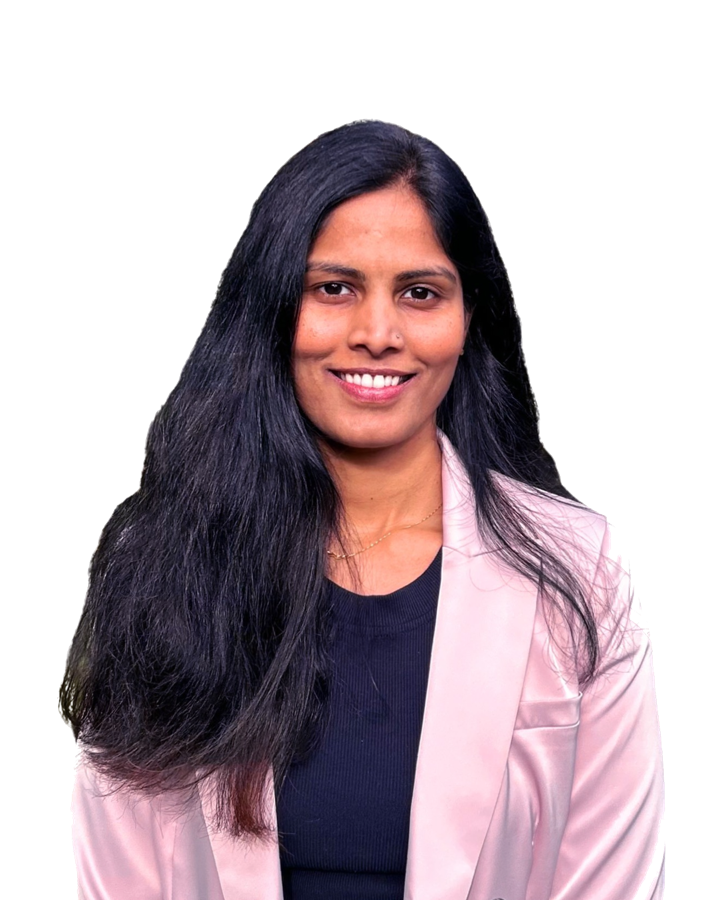

Product Leader / Melbourne
Growth, margin, retention, branding, the customer's reality. The job is to hold them in one decision and own the trade-offs. I've done that for 17 years, across insurance, fintech, retail, and care, in both B2B SaaS and B2C.

About
I'm a generalist product leader who holds the whole business in every product decision. My background is engineering, and over 17 years I've worked across the table from nearly every seat that shapes a product. I've built the technology, owned the commercial number, and carried strategy into rooms with CEOs and boards. That range is the point: when I make a call, I'm reading the whole business at once, from the code to the P&L.
I build the team as deliberately as I build the product, because a product is only ever as good as the organisation shipping it. I've grown and led product organisations, coached managers into genuine owners, and shaped how teams work so they move fast and still decide well. My way of leading is to walk people to the decision rather than hand it down. A call someone reaches on their own outlasts any instruction. The end state I'm after is a team that doesn't need me. I don't see that as a loss. It means the work holds, the people own it, and I'm ready for the next place I can grow.
Outside of work: a good book, a sudoku, some nature, a museum.
Approach
Five convictions, and the calls that earned them.
01
Every business runs on compromises. Tech debt, a scaling shortcut, a rough edge in the UX. None of those are the problem. Taking them on without naming the cost is. A shortcut decided with eyes open and a payback plan is leverage. The same shortcut taken by accident is damage you haven't found yet.
I was brought into Bupa for a like-for-like migration: no new features, a nervous leadership team, a hard deadline. Once I'd earned the trust, I reframed the brief: don't move what's no longer meaningful onto new technology. I descoped legacy features with consensus and put the capacity into what customers actually used, sparing the business a second rebuild soon after. The app went from 2.0 to 4.7 stars and delivered $1M+ in operational savings.
02
A product metric on its own is half a sentence. Pair it with the money. Activation with lifetime value. Latency with conversion. Retention with revenue. An experience that doesn't move the business is a project, not a product.
At Target, I made loyalty the strategy, not a feature, connecting store and digital to lift lifetime value. Target Shop+ delivered $2.2M in revenue and moved 20% more in-store customers to digital channels.
03
Data tells you what happened, not why. The job is to find the actual cause, even when the surface reading is easier to act on.
Leading HighRadius's ANZ market entry, the numbers read as underperformance against US and EU targets. The real cause was different: enterprise cycles in a new market run longer. I closed $530K revenue ($300K ARR) solo, and the $1M+ ($750K ARR) I left at budget approval closed after I'd gone. The surface number and the real story were never the same thing.
04
A strategy that lives in a deck is decoration. The test is whether an engineer, a designer, and a PM, none of them in your meetings, make the same call you would have made. That takes a north star people can use, not admire.
At WooliesX I led a 100-person mobile org. The north star was one line: make mobile the front door to Woolworths. It changed how squads prioritised, how the business allocated resources, and how 10 PMs grew from a BA mindset into genuine owners. Scan & Pay launched at scale on that spine.
05
Authority in product is borrowed, never issued. Every question, every call, every room you walk into either builds confidence in your judgment or spends it. The keys don't get handed over. They follow.
HighRadius handed me a market, solo: product, marketing, and sales across ANZ. When my own senior VP pushed a discount to close the first deal faster, I read the buyer differently: enterprise CFOs buy confidence, not discounts. I held the price to their budget cycle and closed the region's first-ever deal at $70K ARR, full price.
Experience
Hayylo / B2B SaaS, Aged Care
Led product, strategy, and design across three portfolios. Changed the ways of working from services thinking to product thinking: custom wins for one customer cost the capacity to build what the whole market will buy. Paused the app rebuild on a new tech stack when the data said it wasn't what the business needed most in the short term. Channeled that capacity into what was, including a feature seven years in the backlog that won back a churned customer at $100K ARR.
Read the case →HighRadius / US Fintech
Ground-up market launch: no brand presence, no leads, long enterprise sales cycles. One seat, three functions: product, marketing, and sales. Two years later: $530K revenue ($300K ARR) closed solo, $1M+ ($750K ARR) at budget approval. After I'd gone, those buyers called me; I connected them to the right people, and the deals closed.
Read the case →Target Australia / Wesfarmers
Started with the loyalty foundations: compared app, digital, and in-store sales, mapped who shopped where, and worked out how to grow cross-channel engagement. Launched Target Shop+ as a trial program to bring in-store shoppers online, designed around the limits of legacy in-store tech. When Wesfarmers created OnePass, I was asked to represent Target: shaped the overall design and presented it to the board. Shop+ delivered $2.2M and mobile sales grew 40% YoY.
WooliesX / Woolworths Group
Joined as a Senior PM for the insurance portfolio. In my first two months I coached two high-potential BAs into product owners and reset the portfolio's three-year priorities with key stakeholders aligned. Seeing how I operated, my manager moved me to lead all retail mobile apps through the COVID surge: a 100-person org with 10 PMs across the Woolworths mobile app, Everyday Rewards, and Scan & Pay. Shaped the Spotify model, led the Mobile Chapter, and grew POs into PMs who could hold strategy.
Bupa Australia / Healthcare
Bupa's digital estate was dated: a non-responsive website and an app that embedded it. I was brought in to rebuild both for 4M+ members. Relaunched the website and app on new technology: app rating 2.0 to 4.7, digital traffic +300% YoY, $1M+ in operational savings. Then moved from platforms to value: gave members visibility of their remaining benefits, making the case that preventative claims prevent the big ones later. That work was nominated for Bupa's global awards. Launched the Bupa digital membership card.
Read the case →HighRadius / US Fintech
Hands-on developer: built a payments gateway solo for the US B2B market. Led the payments innovation stream and expanded the SAP payments integration into its own product line, EIPP (electronic invoice presentment and payment). Explored a QuickBooks integration alongside. Startup mindset, US clients, whatever role the stage needed.
Testimonials
“Harika is a passionate and highly capable team member. Her strong work ethic and ability to take initiative in difficult business situations have been recognised across the organisation… Consistently driving product strategy, and the associated roadmap, with market and customer-driven insights… Harika's leadership has been instrumental in fostering collaboration among teams, resulting in an improved product portfolio.”
Rohan Vendy / CEO, icareHealth UK / 2025
“Harika initially worked on the technical side of our Payments Gateway product as a developer/architect… resulting in we promoting her to a product management role. A very independent thinker with high emotional intelligence.”
Sashi Narahari / CEO, HighRadius / 2016
“She's a highly resilient and creative problem solver who has been able to successfully navigate complex organizations… a willing and highly capable business partner who can anticipate customer requirements well in advance.”
Ron Jethani / Senior Director, Account Management, HighRadius / 2023
Let's talk
I love solving problems and building products that turn a profit. The right role is wherever I get to do both.
Connect on LinkedIn